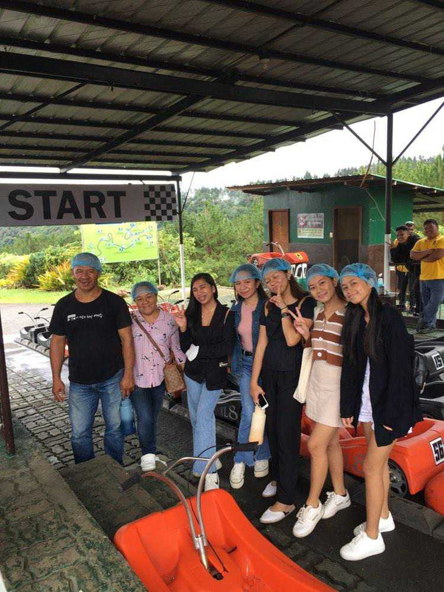
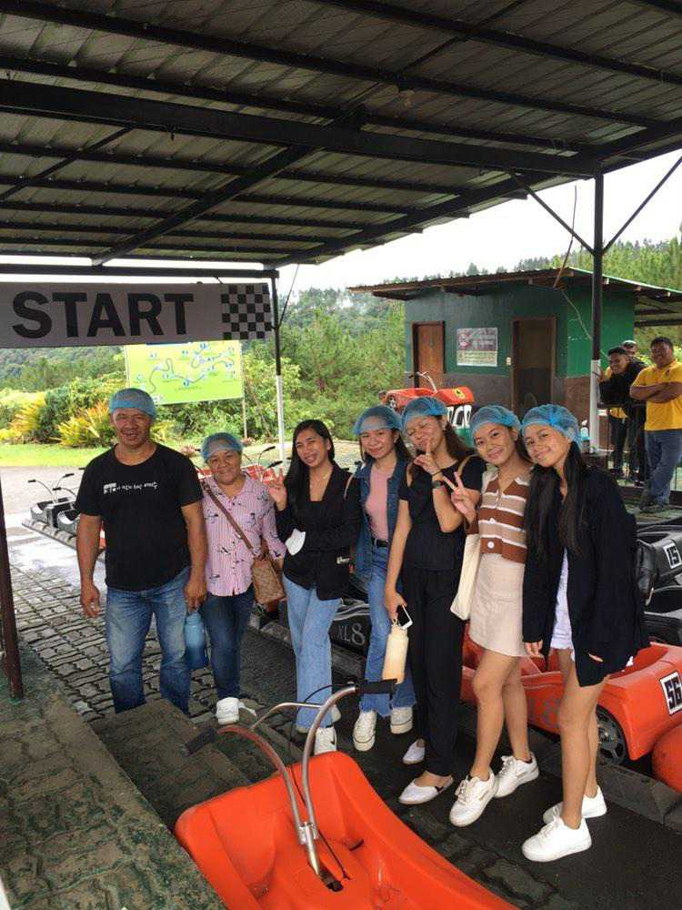
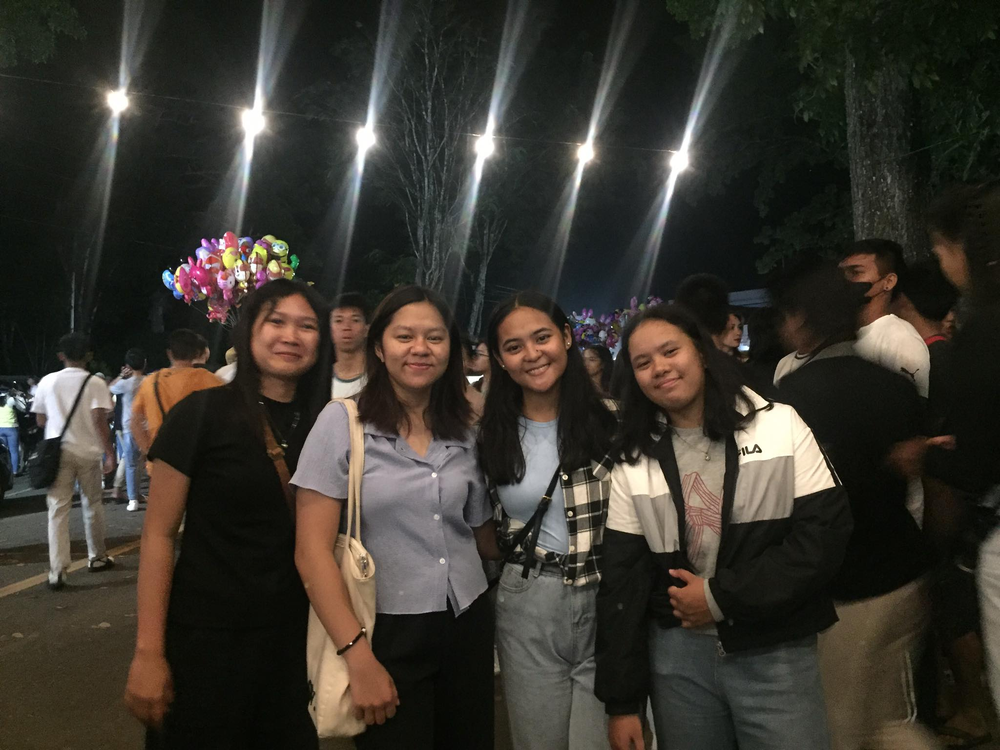
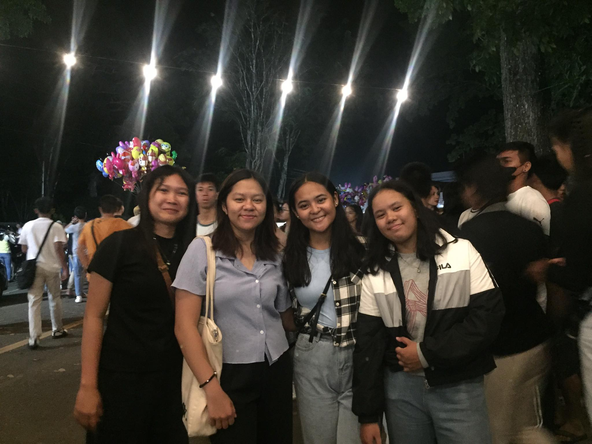

I am proud to say that I am multitalented when It comes to any physical skills. I can play different sports like Table tennis, Basketball, and Badminton, and when it comes to skills that I learned at a very young age which is driving vehicles. I have been an athlete since Elementary, a Table tennis player who played in different places here in the Philippines, places like Bohol, Oroquita, and Tangub, and the most recent one is in Cabacan, Arakan City. My family is portrayed as a source of inspiration, joy, and a constant pillar of strength in both good times and challenges. We reflects on the shared experiences, traditions, and values that contribute to a rich tapestry of memories, shaping our identity and fueling our aspirations. Ultimately, this emphasizes the immeasurable gift of my family, a treasure for which I’m eternally grateful.
 

 
